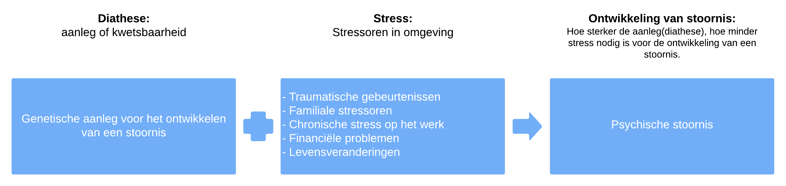

Afwijkend gedrag en behandelmethoden
Rekening Houden met Verschillende Aspecten
Als we kijken naar een situatie moeten we altijd rekening houden met de volgende dingen:
- Een mens met al zijn eigenaardigheden, zijn verleden en heden (Het levensverhaal van de patiënt)
- Een stoornis met meer of minder goed herkenbare specifieke verschijnselen (karakteristieken van de stoornis met bijvoorbeeld de DSM-5 als hulpmiddel)
- Een sociaalratelationele en fysieke omgeving wat de context is waarin de persoon zich heeft ontwikkeld en een stoornis plaatsvind.
- De houding, visie en kennis en vaardigheden van de behandelaar/onderzoeker en de persoon en de culturele context waarin hij of zij zich bevindt.
Biologische Perspectief
Het is handig om ook te weten hoe ons brein werkt vanuit het biologische perspectief. Veel psychische stoornissen zijn terug te leiden uit de biologie. Het is daarom belangrijk om het biologische perspectief te begrijpen.
Het psychologische perspectief en psychodynamische modellen.
Psychodynamische modellen, voortgekomen uit het werk van Sigmund Freud, benadrukken de invloed van onbewuste processen op menselijk gedrag. Ze richten zich op innerlijke conflicten en verdrongen emoties als drijvende krachten achter gedrag en psychische stoornissen. Psychoanalyse, een vorm van psychodynamische therapie, zoekt naar onbewuste elementen in vroege jeugdervaringen om bewustwording te vergroten en symptomen te verminderen. Ondanks evoluties blijft de focus op het onbewuste en de impact van vroege ervaringen een kenmerk van deze benadering, die een blijvende invloed heeft op de psychologie.
psychodynamische modellen.
Oedipuscomplex en Elektracomplex: Het Oedipuscomplex, geïntroduceerd door Freud, beschrijft de psychoseksuele ontwikkeling waarin een kind onbewust gevoelens van romantische liefde ontwikkelt voor de ouder van het andere geslacht en rivaliteit voelt ten opzichte van de ouder van hetzelfde geslacht. Het Elektracomplex is het vrouwelijke equivalent.
Bewuste, Voorbewuste, Onbewuste: Freud verdeelde de geest in drie niveaus. Het bewuste omvat gedachten en gevoelens die momenteel aanwezig zijn. Het voorbewuste bevat informatie die toegankelijk is voor het bewuste. Het onbewuste omvat verborgen verlangens en herinneringen die niet direct toegankelijk zijn, maar invloed uitoefenen op gedrag.
Id, Lustprincipe: Het Id vertegenwoordigt de primitieve, onbewuste driften en verlangens, geregeerd door het lustprincipe. Het streeft naar onmiddellijke bevrediging van verlangens, zonder rekening te houden met sociale normen of consequenties.
Ego, Realiteitsprincipe: Het Ego fungeert als bemiddelaar tussen het Id en de externe wereld. Het wordt geleid door het realiteitsprincipe, wat betekent dat het rekening houdt met de realiteit en sociale normen bij het zoeken naar bevrediging van verlangens.
Superego: Het Superego vertegenwoordigt het morele aspect van de persoonlijkheid, gevormd door internalisatie van sociale normen en waarden. Het fungeert als het geweten en beoordeelt het gedrag in termen van goed en kwaad.
De afbeelding is van www.scienceabc.com
Afweermechanismen van het Ego: Afweermechanismen zijn psychologische strategieën die het ego gebruikt om onbewuste conflicten en angsten te beheersen, waardoor emotioneel evenwicht wordt behouden. Deze mechanismen dienen als bescherming tegen psychisch ongemak.
| Afweermechanisme | Definitie | Voorbeeld |
|---|---|---|
| Verdringing | Onbewust uit het bewustzijn duwen van verontrustende gedachten of herinneringen. | Na een traumatische gebeurtenis zich niet bewust zijn van specifieke details. |
| Regressie | Terugvallen naar eerdere stadia van ontwikkeling bij het ervaren van stress. | Een volwassene die kinderlijk gedrag vertoont tijdens perioden van intense stress. |
| Rationalisatie | Verklaringen en redenen geven die sociaal aanvaardbaar zijn, maar niet noodzakelijk waar. | Iemand die een afwijzing interpreteert als "ze begrepen me gewoon niet." |
| Verplaatsing | Het richten van emoties op een ander, minder bedreigend doelwit dan de bron van de emotie. | Irritatie op het werk uiten tegenover vrienden of familie thuis. |
| Projectie | Attributen of gevoelens toeschrijven aan anderen die eigenlijk van toepassing zijn op zichzelf. | Iemand die zijn eigen jaloezie ziet als het vermoeden dat anderen jaloers zijn op hem. |
| Reactieformatie | Het vertonen van gedrag dat het tegenovergestelde is van wat werkelijk wordt gevoeld. | Iemand die zich overdreven vriendelijk gedraagt naar iemand waar hij eigenlijk boos op is. |
| Ontkenning | Weigeren de realiteit of waarheid van een situatie onder ogen te zien. | Een persoon die wordt ontslagen en blijft geloven dat ze binnenkort weer zullen worden aangenomen. |
| Sublimatie | Het omzetten van ongewenste impulsen in sociaal aanvaardbaar gedrag. | Iemand met agressieve impulsen die ze inzet in sport of kunst. |
Cognitieve Modellen
Cognitieve modellen zijn cruciaal om psychische stoornissen te begrijpen, aangezien deze vaak worden beschouwd als verstoringen in cognitieve processen. Een diepgaand begrip van deze processen is daarom essentieel. Druk op de knoppen hieronder om meer te leren over hoe cognitieve modellen ons inzicht in psychisch welzijn verbeteren.
Humanistische Modellen
Humanistische modellen, zoals ontwikkeld door Abraham Maslow, benadrukken de intrinsieke waarde van individuen en hun streven naar zelfactualisatie. Maslow's Hiërarchie van Behoeften, weergegeven in een piramide, beschrijft de evolutionaire opklimming van basisbehoeften naar zelfverwerkelijking.
Afwijkend gedrag wordt in het humanistische perspectief gezien als een signaal van onvervulde behoeften en een belemmering voor zelfactualisatie. Het concept van onvoorwaardelijke positieve waardering benadrukt het belang van liefde en acceptatie zonder oordeel, terwijl voorwaardelijke positieve waardering gebaseerd is op prestaties en gedrag.
De afbeelding is van realunit.ch en laat de pyramide van behoeftes zien volgens Maslow
Sociaal-Cultureel Perspectief
In het sociaal-cultureel perspectief zoeken experts naar oorzaken van afwijkend gedrag meer in maatschappelijke problemen dan in de persoon zelf. Thomas Szasz, een belangrijke denker hierin, vindt het niet goed om mensen die anders zijn als 'ziek' te bestempelen vanwege maatschappelijke normen. Het is belangrijk om te begrijpen dat afwijkend gedrag niet altijd ziekte betekent, en dat negatieve oordelen, ook wel stigma genoemd, invloed hebben op sociaal afwijkende mensen.
Diathese-Stress Model
Het diathese-stressmodel stelt dat psychische stoornissen ontstaan door de interactie tussen biologische aanleg (diathese) en omgevingsstressoren. Deze stressoren kunnen variëren van traumatische gebeurtenissen en familiale stress tot chronische werkstress, financiële problemen en levensveranderingen. Het model benadrukt dat de combinatie van aanleg en stress bepalend is voor het risico op het ontwikkelen van psychische problemen.
Soorten Hulpverleners
Er zijn verschillende professionals betrokken bij de geestelijke gezondheidszorg, elk met hun specifieke expertise. Een diverse groep hulpverleners is waardevol, omdat zij verschillende perspectieven en benaderingen kunnen bieden.
Het biopsychosociale perspectief, waarbij gekeken wordt naar de interactie tussen biologische, psychologische en sociale factoren, vormt de basis voor de benadering van deze professionals. Hier zijn enkele toelichtingen:
- Maatschappelijk werkers: Bieden sociaal-emotionele ondersteuning en begeleiding in diverse levenssituaties.
- Creatieve therapeuten: Gebruiken kunstzinnige expressie als middel voor emotionele verwerking en zelfontdekking.
- Psychomotorische therapeuten: Integreren lichaamsbeweging en lichaamsgerichte technieken in therapie voor emotionele en psychische gezondheid.
- Toegepaste psychologen: Passen psychologische kennis toe op specifieke gebieden zoals onderwijs, gezondheidszorg of organisaties.
- Verpleegkundigen (sociaal-psychiatrisch): Bieden verpleegkundige zorg en ondersteuning aan mensen met psychische aandoeningen.
- Ergotherapeuten: Helpen individuen bij het verbeteren van hun dagelijkse functioneren door middel van praktische activiteiten.
- Sociaal Juridische Dienstverleners: Bieden juridische ondersteuning en advies in combinatie met sociale dienstverlening.